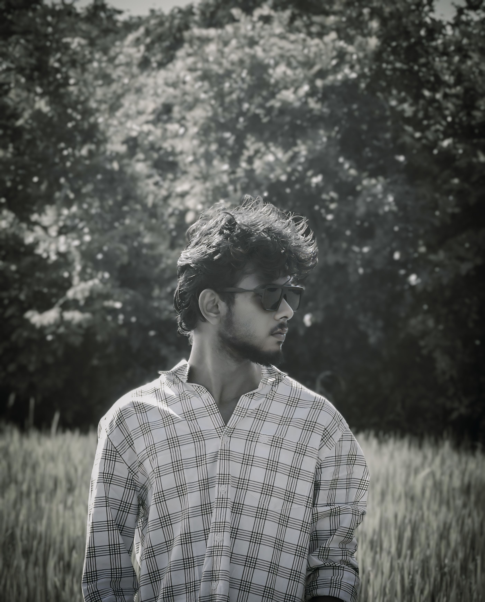

I am Hassan, an energetic and adventurous extrovert who thrives on friendship, creativity, and technology. I have a passion for photo editing and photography, capturing moments through the lens and bringing my artistic vision to life. I’m also on a journey to becoming a full-stack developer, mastering both front-end and back-end skills. As a true night owl, I find my best ideas come to life in the quiet hours of the night. I love traveling, exploring new places, and creating unforgettable memories. Friendship is a big part of my life, and I cherish meaningful connections with people. With my vibrant personality and ambitious mindset, I’m always ready for new experiences and challenges!